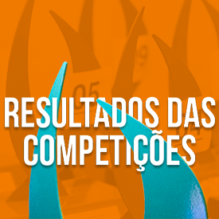
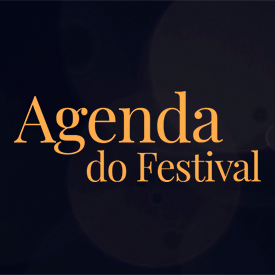
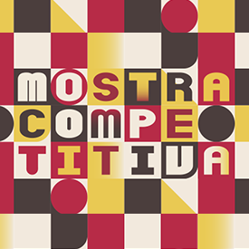
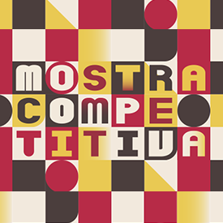
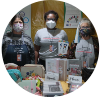
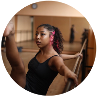

Festival de Dança de Joinville
Preocupação com qualidade, pluralidade e troca de conhecimento, talento e experiência. É com esses objetivos que o Festival de Dança de Joinville se consolidou ao longo de mais de três décadas, tornando-se destino tradicional dos amantes da dança. Participantes de todo o país e até mesmo do exterior viajam à Joinville para concorrer na Mostra Competitiva, se apresentar no Meia Ponta ou nos Palcos Abertos que se espalham pela cidade. Além disso, há um leque de opções para aprimoramento profissional por meio de didáticas inclusivas, com o oferecimento e realização de cursos, oficinas, workshops, palestras, debates e inúmeras ações voltadas aos bailarinos e coreógrafos.
Em cima do palco, bailarinos brilham, seja na Noite de Abertura, que traz montagens completas de balés consagrados, peças de destaque de gêneros diversos de dança ou criações contemporâneas que abrangem o universo da dança e das artes, seja nas Mostras Competitivas e na Estímulo Mostra de Dança. A preocupação de trazer à Joinville o que há de melhor, move a Curadoria Artística e a organização do Festival.
O saltare
Em 2018, o Instituto Festival de Dança de Joinville presenteia a Capital Nacional da Dança com o Centro de Dança, um espaço para reunir a história do Festival, capacitar profissionais e alunos, ensaios de grupos, projetos sociais, mostras e exposições, entre outras iniciativas. O espaço da escola, desativado há mais de 12 anos, foi totalmente reformado para se transformar no Centro de Dança.
De 2009 a 2016 várias tentativas de uso do imóvel foram feitas, como sede temporária da Universidade Federal de Santa Catarina, da Escola de Artes de Florença e da Secretaria de Arte e Cultura, e chegou a ser cedido para a Udesc para implantação da Escola Livre de Artes, que acabou devolvendo-o ao Governo do Estado. Com a restauração e instalação do Centro de Dança, finalmente as antigas instalações do Germano Timm ganham nova vida e movimento.
Tudo começou dia 20 dezembro de 2017, quando o Governo do Estado de Santa Catarina assinou o termo de permissão de uso de imóvel do antigo prédio da Escola Germano Timm ao Instituto Festival de Dança. O espaço passa a abrigar o acervo do Festival de Dança para consulta pública, com fotos, vídeos e recortes de jornal, desde 1983 até a edição passada.
Atividades Gratuitas
-
ACESSIBILIDADE - A DANÇA ALÉM DO CORPO E A SUPERAÇÃO DOS LIMITES - ACESSIBILIDADE - DANÇA INCLUSIVA
- Professor(a):MARIO CEZAR
- Data:26/07/2024 A 26/07/2024
- Horário:15:00 - 17:00
-
CAPOEIRA - MAIS DANÇA
- Professor(a):JULIANO DITTRICH RAMOS E WESLEY ALVES DE SOUZA - MESTRE LELO
- Data:20/07/2024 A 20/07/2024
- Horário:10:00 - 12:00
-
"CORPO, MOVIMENTO E DANÇA EM UMA VISÃO INCLUSIVA" - ACESSIBILIDADE - DANÇA INCLUSIVA
- Professor(a):JULIANO DITTRICH RAMOS E WESLEY ALVES DE SOUZA - MESTRE LELO
- Data:20/07/2024 A 20/07/2024
- Horário:10:00 - 12:00
Atrações
  

O Festival
-

Feira da Sapatilha
A Feira da Sapatilha reúne os melhores artigos para os mais variados gêneros de dança. O Expocentro Edmundo Doubrawa recebe tendências em moda para o segmento, figurinos, equipamentos, artesanato e tecnologia para o setor.
-

Programação Didática
O Festival de Dança de Joinville dedica atenção cada vez maior à formação e aprimoramento técnico de bailarinos, estudantes e profissionais ligados à dança, por meio de cursos com aulas teóricas e práticas. Neste ano, são mais de 2.400 vagas disponíveis em 110 cursos e oficinas com especialistas reconhecidos em suas áreas no Brasil e exterior. Além disso, os professores contam ainda com assessoria pedagógica.